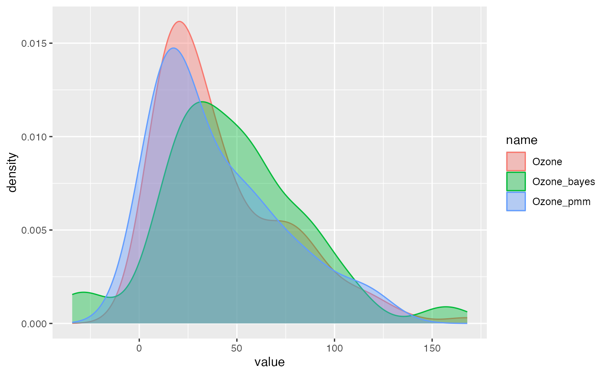

vignettes/miceFast-intro.Rmd
miceFast-intro.RmdmiceFast provides fast imputation methods built on C++/RcppArmadillo (Eddelbuettel & Sanderson, 2014). The main interfaces are:
fill_NA and fill_NA_N work with
dplyr and data.table pipelines.new(miceFast) provides an OOP interface for maximum
control.pool() combines results from multiply imputed datasets
using Rubin’s rules (Rubin, 1987) with the Barnard-Rubin (1999)
degrees-of-freedom adjustment.For missing-data theory (MCAR/MAR/MNAR) and full MI workflows, see the companion vignette: Missing Data Mechanisms and Multiple Imputation. For a comprehensive treatment, see van Buuren (2018).
miceFast supports several models via the
model argument in fill_NA() and
fill_NA_N():
| Model | Type | Stochastic? | Use case |
|---|---|---|---|
lm_pred |
Linear regression | No | Deterministic point prediction. With only an Intercept
column, equivalent to mean imputation. |
lm_bayes |
Bayesian linear regression | Yes | Draws coefficients from their posterior. Recommended for MI of continuous variables. |
lm_noise |
Linear regression + noise | Yes (improper) | Adds residual noise but omits parameter uncertainty. Useful for sensitivity analysis, not recommended as the primary MI model. |
lda |
Linear Discriminant Analysis | Approximate | For categorical variables. With a random
ridge parameter it becomes stochastic. Suitable for MI but
not strictly proper (uses ad-hoc perturbation, not a posterior
draw). |
pmm |
Predictive Mean Matching | Yes (proper) | Imputes from observed values via nearest-neighbour matching on
Bayesian-posterior predictions. Works for both
continuous and categorical variables.
Available through fill_NA_N() / OOP impute() /
impute_N(). |
For MI you need a stochastic model.
lm_bayes is strictly
proper (Rubin, 1987): it draws both coefficients and
residual variance from their posterior.
pmm is also proper. It
draws coefficients from the posterior for predictions on missing rows,
then matches to the nearest observed values (Type II PMM; van Buuren,
2018). It works for both continuous and categorical variables and
naturally preserves the observed data distribution. For categorical
variables, lda with
ridge = runif(1, ...) is an approximate
approach. The random ridge creates between-imputation variability, but
it is not a true posterior draw. lm_noise is
improper. It adds residual noise but omits parameter
uncertainty. Both lda + ridge and lm_noise
work well in practice and are useful for sensitivity analysis. See the
MI vignette.
The package ships with air_miss, an extended version of
airquality with additional columns including a character
variable, weights, groups, and a categorized Ozone variable.
## 'data.frame': 153 obs. of 13 variables:
## $ Ozone : num 41 36 12 18 NA 28 23 19 8 NA ...
## $ Solar.R : num 190 118 149 313 NA NA 299 99 19 194 ...
## $ Wind : num 7.4 8 12.6 11.5 14.3 14.9 8.6 13.8 20.1 8.6 ...
## $ Temp : num 67 72 74 62 56 66 65 59 61 69 ...
## $ Day : num 1 2 3 4 5 6 7 8 9 10 ...
## $ Intercept : num 1 1 1 1 1 1 1 1 1 1 ...
## $ index : num 1 2 3 4 5 6 7 8 9 10 ...
## $ weights : num 1.019 1.011 0.989 0.991 0.995 ...
## $ groups : Factor w/ 5 levels "5","6","7","8",..: 1 1 1 1 1 1 1 1 1 1 ...
## $ x_character: chr "(140,210]" "(70,140]" "(140,210]" "(280,350]" ...
## $ Ozone_chac : chr "(40,60]" "(20,40]" "(0,20]" "(0,20]" ...
## $ Ozone_f : Factor w/ 8 levels "(0,20]","(20,40]",..: 3 2 1 1 NA 2 2 1 1 NA ...
## $ Ozone_high : logi FALSE FALSE FALSE FALSE NA FALSE ...Before imputing, check Variance Inflation Factors. Values above ~10 suggest problematic collinearity that can destabilize imputation models. Consider dropping or combining redundant predictors before imputing.
VIF(
air_miss,
posit_y = "Ozone",
posit_x = c("Solar.R", "Wind", "Temp", "x_character", "Day", "weights", "groups")
)## [,1]
## [1,] 24.978996
## [2,] 1.445308
## [3,] 3.077776
## [4,] 42.248792
## [5,] 1.083795
## [6,] 1.100853
## [7,] 2.954588fill_NA()
fill_NA() imputes missing values in a single column
using a specified model and predictors. It accepts column names
(strings) or position indices and works inside
dplyr::mutate() or data.table :=
expressions.
data(air_miss)
result <- air_miss %>%
# Continuous variable: Bayesian linear model (stochastic)
mutate(Ozone_imp = fill_NA(
x = .,
model = "lm_bayes",
posit_y = "Ozone",
posit_x = c("Solar.R", "Wind", "Temp")
)) %>%
# Categorical variable: LDA
mutate(x_char_imp = fill_NA(
x = .,
model = "lda",
posit_y = "x_character",
posit_x = c("Wind", "Temp")
))
head(result[, c("Ozone", "Ozone_imp", "x_character", "x_char_imp")])## Ozone Ozone_imp x_character x_char_imp
## 1 41 41 (140,210] (140,210]
## 2 36 36 (70,140] (70,140]
## 3 12 12 (140,210] (140,210]
## 4 18 18 (280,350] (280,350]
## 5 NA NA <NA> (0,70]
## 6 28 28 <NA> (0,70]Grouping fits a separate model per group, which is useful when the relationship between variables varies across subpopulations. Weights allow for heteroscedasticity or survey designs.
data(air_miss)
result_grouped <- air_miss %>%
group_by(groups) %>%
do(mutate(.,
Solar_R_imp = fill_NA(
x = .,
model = "lm_pred",
posit_y = "Solar.R",
posit_x = c("Wind", "Temp", "Intercept"),
w = .[["weights"]]
)
)) %>%
ungroup()
head(result_grouped[, c("Solar.R", "Solar_R_imp", "groups")])## # A tibble: 6 × 3
## Solar.R Solar_R_imp groups
## <dbl> <dbl> <fct>
## 1 190 190 5
## 2 118 118 5
## 3 149 149 5
## 4 313 313 5
## 5 NA 103. 5
## 6 NA 176. 5For right-skewed variables (like Ozone), use
logreg = TRUE to impute on the log scale. The model fits on
and back-transforms the predictions:
data(air_miss)
result_log <- air_miss %>%
mutate(Ozone_imp = fill_NA(
x = .,
model = "lm_bayes",
posit_y = "Ozone",
posit_x = c("Solar.R", "Wind", "Temp", "Intercept"),
logreg = TRUE
))
# Compare distributions: log imputation avoids negative values
summary(result_log[c("Ozone", "Ozone_imp")])## Ozone Ozone_imp
## Min. : 1.00 Min. : 1.00
## 1st Qu.: 18.00 1st Qu.: 18.55
## Median : 31.50 Median : 30.00
## Mean : 42.13 Mean : 41.12
## 3rd Qu.: 63.25 3rd Qu.: 59.00
## Max. :168.00 Max. :168.00
## NA's :37 NA's :2You can refer to columns by position instead of name. Check
names(air_miss) to find the right positions:
data(air_miss)
result_pos <- air_miss %>%
mutate(Ozone_imp = fill_NA(
x = .,
model = "lm_bayes",
posit_y = 1,
posit_x = c(4, 6),
logreg = TRUE
))
head(result_pos[, c("Ozone", "Ozone_imp")])## Ozone Ozone_imp
## 1 41 41.000000
## 2 36 36.000000
## 3 12 12.000000
## 4 18 18.000000
## 5 NA 4.793808
## 6 28 28.000000
data(air_miss)
setDT(air_miss)
air_miss[, Ozone_imp := fill_NA(
x = .SD,
model = "lm_bayes",
posit_y = "Ozone",
posit_x = c("Solar.R", "Wind", "Temp")
)]
air_miss[, x_char_imp := fill_NA(
x = .SD,
model = "lda",
posit_y = "x_character",
posit_x = c("Wind", "Temp")
)]
# With grouping
air_miss[, Solar_R_imp := fill_NA(
x = .SD,
model = "lm_pred",
posit_y = "Solar.R",
posit_x = c("Wind", "Temp", "Intercept"),
w = .SD[["weights"]]
), by = .(groups)]fill_NA_N()
For lm_bayes and lm_noise,
fill_NA_N() generates k stochastic draws per
missing observation and returns their average. For
pmm, k is the number of nearest observed
neighbours from which one value is randomly selected (no averaging). In
both cases the result is a single filled-in dataset. Between-imputation
variance is lost, so Rubin’s rules cannot be applied. For MI with
continuous variables, use fill_NA() + pool()
with lm_bayes. For MI with PMM (proper,
works for both continuous and categorical variables), use the OOP
interface: call impute("pmm", ...) in a loop (see the OOP section and the MI vignette).
data(air_miss)
result_n <- air_miss %>%
# PMM with 20 draws. Imputes from observed values.
mutate(Ozone_pmm = fill_NA_N(
x = .,
model = "pmm",
posit_y = "Ozone",
posit_x = c("Solar.R", "Wind", "Temp"),
k = 20
)) %>%
# lm_noise with 30 draws and weights
mutate(Ozone_noise = fill_NA_N(
x = .,
model = "lm_noise",
posit_y = "Ozone",
posit_x = c("Solar.R", "Wind", "Temp"),
w = .[["weights"]],
logreg = TRUE,
k = 30
))Use compare_imp() to visually compare the distribution
of observed vs. imputed values:
data(air_miss)
air_miss_imp <- air_miss %>%
mutate(
Ozone_bayes = fill_NA(x = ., model = "lm_bayes",
posit_y = "Ozone", posit_x = c("Solar.R", "Wind", "Temp")),
Ozone_pmm = fill_NA_N(x = ., model = "pmm",
posit_y = "Ozone", posit_x = c("Solar.R", "Wind", "Temp"), k = 20)
)
compare_imp(air_miss_imp, origin = "Ozone", target = c("Ozone_bayes", "Ozone_pmm"))
pool()
For proper statistical inference on incomplete data, use the MI workflow:
pool().pool() works with any model that has coef()
and vcov() methods.
data(air_miss)
# Select the 4 core variables: Ozone and Solar.R have NAs; Wind and Temp are complete.
df <- air_miss[, c("Ozone", "Solar.R", "Wind", "Temp")]
# Step 1: Generate m = 10 completed datasets.
# Impute Solar.R first (predictors fully observed), then Ozone
# (can now use the freshly imputed Solar.R). This sequential order
# ensures all NAs are filled in a single pass.
set.seed(1234)
completed <- lapply(1:10, function(i) {
df %>%
mutate(Solar.R = fill_NA(., "lm_bayes", "Solar.R", c("Wind", "Temp"))) %>%
mutate(Ozone = fill_NA(., "lm_bayes", "Ozone", c("Solar.R", "Wind", "Temp")))
})
# Step 2: Fit the analysis model on each completed dataset
fits <- lapply(completed, function(d) lm(Ozone ~ Solar.R + Wind + Temp, data = d))
# Step 3: Pool using Rubin's rules
pool_res <- pool(fits)
pool_res## Pooled results from 10 imputed datasets
## Rubin's rules with Barnard-Rubin df adjustment
##
## term estimate std.error statistic df p.value
## (Intercept) -49.50313 21.74948 -2.276 78.41 2.557e-02
## Solar.R 0.05771 0.02294 2.516 72.83 1.407e-02
## Wind -3.44033 0.62721 -5.485 76.15 5.185e-07
## Temp 1.47603 0.23404 6.307 97.50 8.345e-09
summary(pool_res)## Pooled results from 10 imputed datasets
## Rubin's rules with Barnard-Rubin df adjustment
## Complete-data df: 149
##
## Coefficients:
## term estimate std.error statistic df p.value conf.low conf.high
## (Intercept) -49.50313 21.74948 -2.276 78.41 2.557e-02 -92.79945 -6.2068
## Solar.R 0.05771 0.02294 2.516 72.83 1.407e-02 0.01199 0.1034
## Wind -3.44033 0.62721 -5.485 76.15 5.185e-07 -4.68949 -2.1912
## Temp 1.47603 0.23404 6.307 97.50 8.345e-09 1.01156 1.9405
##
## Pooling diagnostics:
## term ubar b t riv lambda fmi
## (Intercept) 3.801e+02 8.450e+01 4.730e+02 0.2445 0.1965 0.2162
## Solar.R 4.137e-04 1.023e-04 5.262e-04 0.2720 0.2138 0.2345
## Wind 3.134e-01 7.273e-02 3.934e-01 0.2553 0.2034 0.2235
## Temp 4.688e-02 7.179e-03 5.477e-02 0.1685 0.1442 0.1612In practice you often need to impute every variable that has missing values, then run MI with proper pooling. The key is ordering: impute variables whose predictors are complete first, then variables that depend on the freshly imputed ones. This sequential chain resolves joint missingness in a single pass without iterative FCS.
Below is a complete workflow using air_miss.
data(air_miss)
# Define a function that fills all variables with NAs in one pass.
# Order matters: Solar.R first (Wind, Temp are complete), then Ozone
# (uses the freshly imputed Solar.R), then categorical variables.
impute_all <- function(data) {
data %>%
# Continuous: Solar.R (predictors fully observed)
mutate(Solar.R = fill_NA(
x = ., model = "lm_bayes",
posit_y = "Solar.R",
posit_x = c("Wind", "Temp")
)) %>%
# Continuous: Ozone (Solar.R now complete)
mutate(Ozone = fill_NA(
x = ., model = "lm_bayes",
posit_y = "Ozone",
posit_x = c("Solar.R", "Wind", "Temp")
)) %>%
# Categorical: x_character (LDA with random ridge for stochasticity)
mutate(x_character = fill_NA(
x = ., model = "lda",
posit_y = "x_character",
posit_x = c("Wind", "Temp"),
ridge = runif(1, 0.5, 50)
)) %>%
# Categorical: Ozone_chac (use tryCatch for safety with small groups)
group_by(groups) %>%
do(mutate(., Ozone_chac = tryCatch(
fill_NA(
x = ., model = "lda",
posit_y = "Ozone_chac",
posit_x = c("Temp", "Wind")
),
error = function(e) .[["Ozone_chac"]]
))) %>%
ungroup()
}
# MI: generate m = 10 completed datasets
set.seed(2024)
m <- 10
completed <- lapply(1:m, function(i) impute_all(air_miss))
# Fit the analysis model on each completed dataset
fits <- lapply(completed, function(d) lm(Ozone ~ Solar.R + Wind + Temp, data = d))
# Pool using Rubin's rules
pool_result <- pool(fits)
pool_result## Pooled results from 10 imputed datasets
## Rubin's rules with Barnard-Rubin df adjustment
##
## term estimate std.error statistic df p.value
## (Intercept) -43.23376 22.05142 -1.961 70.82 5.386e-02
## Solar.R 0.05654 0.02354 2.402 57.86 1.953e-02
## Wind -3.55701 0.60447 -5.884 97.10 5.689e-08
## Temp 1.41775 0.24206 5.857 77.72 1.072e-07
summary(pool_result)## Pooled results from 10 imputed datasets
## Rubin's rules with Barnard-Rubin df adjustment
## Complete-data df: 149
##
## Coefficients:
## term estimate std.error statistic df p.value conf.low conf.high
## (Intercept) -43.23376 22.05142 -1.961 70.82 5.386e-02 -87.205037 0.7375
## Solar.R 0.05654 0.02354 2.402 57.86 1.953e-02 0.009422 0.1037
## Wind -3.55701 0.60447 -5.884 97.10 5.689e-08 -4.756706 -2.3573
## Temp 1.41775 0.24206 5.857 77.72 1.072e-07 0.935821 1.8997
##
## Pooling diagnostics:
## term ubar b t riv lambda fmi
## (Intercept) 3.791e+02 9.743e+01 4.863e+02 0.2827 0.2204 0.2415
## Solar.R 4.055e-04 1.351e-04 5.541e-04 0.3664 0.2682 0.2922
## Wind 3.123e-01 4.823e-02 3.654e-01 0.1699 0.1452 0.1623
## Temp 4.696e-02 1.058e-02 5.859e-02 0.2477 0.1985 0.2184The same workflow using data.table:
data(air_miss)
setDT(air_miss)
impute_all_dt <- function(dt) {
d <- copy(dt)
# Order: Solar.R first (predictors complete), then Ozone, then categoricals
d[, Solar.R := fill_NA(
x = .SD, model = "lm_bayes",
posit_y = "Solar.R",
posit_x = c("Wind", "Temp")
)]
d[, Ozone := fill_NA(
x = .SD, model = "lm_bayes",
posit_y = "Ozone",
posit_x = c("Solar.R", "Wind", "Temp")
)]
d[, x_character := fill_NA(
x = .SD, model = "lda",
posit_y = "x_character", posit_x = c("Wind", "Temp"),
ridge = runif(1, 0.5, 50)
)]
d[, Ozone_chac := tryCatch(
fill_NA(
x = .SD, model = "lda",
posit_y = "Ozone_chac", posit_x = c("Temp", "Wind")
),
error = function(e) .SD[["Ozone_chac"]]
), by = .(groups)]
d
}
set.seed(2024)
completed_dt <- lapply(1:10, function(i) impute_all_dt(air_miss))
fits_dt <- lapply(completed_dt, function(d) lm(Ozone ~ Solar.R + Wind + Temp, data = d))
pool(fits_dt)## Pooled results from 10 imputed datasets
## Rubin's rules with Barnard-Rubin df adjustment
##
## term estimate std.error statistic df p.value
## (Intercept) -43.23376 22.05142 -1.961 70.82 5.386e-02
## Solar.R 0.05654 0.02354 2.402 57.86 1.953e-02
## Wind -3.55701 0.60447 -5.884 97.10 5.689e-08
## Temp 1.41775 0.24206 5.857 77.72 1.072e-07miceFast OOP Module
For maximum performance and fine-grained control, use the C++ object directly. This interface operates on numeric matrices and uses column position indices.
| Method | Description |
|---|---|
set_data(x) |
Set the data matrix (by reference). |
set_g(g) |
Set a grouping variable (positive numeric, no NAs). |
set_w(w) |
Set a weighting variable (positive numeric, no NAs). |
impute(model, y, x) |
Single imputation. All models including pmm (k =
1). |
impute_N(model, y, x, k) |
lm_bayes/lm_noise: averaged k
draws. pmm: samples from k nearest observed
values. |
update_var(y, imps) |
Permanently update a column with imputations. |
vifs(y, x) |
Variance Inflation Factors. |
get_data() / get_g() /
get_w() / get_index()
|
Retrieve data or metadata. |
sort_byg() / is_sorted_byg()
|
Sort by grouping variable. |
which_updated() |
Check which columns have been updated. |
Note that update_var() permanently alters the data
matrix by reference. When a grouping variable is set, data is
automatically sorted on first imputation; use get_index()
to recover the original row order.
data <- cbind(as.matrix(airquality[, 1:4]), intercept = 1, index = 1:nrow(airquality))
model <- new(miceFast)
model$set_data(data)
# Single imputation with linear model (col 1 = Ozone)
model$update_var(1, model$impute("lm_pred", 1, 5)$imputations)
# Averaged multiple imputation for Solar.R (col 2, Bayesian, k=10 draws)
model$update_var(2, model$impute_N("lm_bayes", 2, c(1, 3, 4, 5), k = 10)$imputations)
model$which_updated()## [1] 1 2
head(model$get_data(), 4)## [,1] [,2] [,3] [,4] [,5] [,6]
## [1,] 41 190 7.4 67 1 1
## [2,] 36 118 8.0 72 1 2
## [3,] 12 149 12.6 74 1 3
## [4,] 18 313 11.5 62 1 4
data <- cbind(as.matrix(airquality[, -5]), intercept = 1, index = 1:nrow(airquality))
weights <- rgamma(nrow(data), 3, 3)
groups <- as.numeric(airquality[, 5])
model <- new(miceFast)
model$set_data(data)
model$set_w(weights)
model$set_g(groups)
model$update_var(1, model$impute("lm_pred", 1, 6)$imputations)
model$update_var(2, model$impute_N("lm_bayes", 2, c(1, 3, 4, 5, 6), k = 10)$imputations)
# Recover original row order
head(cbind(model$get_data(), model$get_g(), model$get_w())[order(model$get_index()), ], 4)## [,1] [,2] [,3] [,4] [,5] [,6] [,7] [,8] [,9]
## [1,] 41 190 7.4 67 1 1 1 5 0.5007903
## [2,] 36 118 8.0 72 2 1 2 5 0.3379412
## [3,] 12 149 12.6 74 3 1 3 5 0.6301132
## [4,] 18 313 11.5 62 4 1 4 5 0.7454949When groups are not pre-sorted, the data is automatically sorted on first imputation:
data <- cbind(as.matrix(airquality[, -5]), intercept = 1, index = 1:nrow(airquality))
weights <- rgamma(nrow(data), 3, 3)
groups <- as.numeric(sample(1:8, nrow(data), replace = TRUE))
model <- new(miceFast)
model$set_data(data)
model$set_w(weights)
model$set_g(groups)
model$update_var(1, model$impute("lm_pred", 1, 6)$imputations)
model$update_var(2, model$impute_N("lm_bayes", 2, c(1, 3, 4, 5, 6), 10)$imputations)
head(cbind(model$get_data(), model$get_g(), model$get_w())[order(model$get_index()), ], 4)## [,1] [,2] [,3] [,4] [,5] [,6] [,7] [,8] [,9]
## [1,] 41 190 7.4 67 1 1 1 6 0.6627979
## [2,] 36 118 8.0 72 2 1 2 8 1.1256717
## [3,] 12 149 12.6 74 3 1 3 2 0.6791476
## [4,] 18 313 11.5 62 4 1 4 3 0.2004544The OOP interface can also drive the full MI loop. Each iteration creates a fresh model, imputes all variables with missing values, and returns the completed matrix in the original row order.
This example uses lm_bayes; for PMM (which also works
for categorical variables), simply replace "lm_bayes" with
"pmm". PMM is proper and draws from the Bayesian posterior
before matching to observed values.
data(air_miss)
# Prepare a numeric matrix with an intercept and row index
mat <- cbind(
as.matrix(air_miss[, c("Ozone", "Solar.R", "Wind", "Temp")]),
intercept = 1,
index = seq_len(nrow(air_miss))
)
groups <- as.numeric(air_miss$groups)
impute_oop <- function(mat, groups) {
m <- new(miceFast)
m$set_data(mat + 0) # copy. set_data uses the matrix by reference.
m$set_g(groups)
# col 1 = Ozone, col 2 = Solar.R, col 3 = Wind, col 4 = Temp, col 5 = intercept
m$update_var(1, m$impute("lm_bayes", 1, c(2, 3, 4))$imputations)
m$update_var(2, m$impute("lm_bayes", 2, c(3, 4, 5))$imputations)
completed <- m$get_data()[order(m$get_index()), ]
as.data.frame(completed)
}
set.seed(2025)
completed <- lapply(1:10, function(i) impute_oop(mat, groups))
fits <- lapply(completed, function(d) lm(V1 ~ V3 + V4, data = d))
pool(fits)## Pooled results from 10 imputed datasets
## Rubin's rules with Barnard-Rubin df adjustment
##
## term estimate std.error statistic df p.value
## (Intercept) -69.010 25.8410 -2.671 62.19 9.651e-03
## V3 -2.659 0.7687 -3.459 43.12 1.233e-03
## V4 1.751 0.2681 6.530 76.01 6.646e-09## Pooled results from 10 imputed datasets
## Rubin's rules with Barnard-Rubin df adjustment
## Complete-data df: 148
##
## Coefficients:
## term estimate std.error statistic df p.value conf.low conf.high
## (Intercept) -69.010 25.8410 -2.671 62.19 9.651e-03 -120.663 -17.358
## V3 -2.659 0.7687 -3.459 43.12 1.233e-03 -4.209 -1.109
## V4 1.751 0.2681 6.530 76.01 6.646e-09 1.217 2.285
##
## Pooling diagnostics:
## term ubar b t riv lambda fmi
## (Intercept) 500.7617 151.81238 667.75527 0.3335 0.2501 0.2731
## V3 0.3902 0.18250 0.59094 0.5145 0.3397 0.3684
## V4 0.0573 0.01325 0.07188 0.2543 0.2028 0.2229The mice package uses Fully Conditional
Specification (FCS): it imputes each variable given all others
and cycles through multiple iterations until convergence. miceFast can
do exactly the same thing. The key is that update_var()
modifies the data matrix in place, so each subsequent
impute() call sees the freshly imputed values.
The same logic works with fill_NA and :=,
which also updates columns in place:
data(air_miss)
setDT(air_miss)
fcs_dt <- function(dt, n_iter = 5) {
d <- copy(dt)
na_ozone <- is.na(d$Ozone)
na_solar <- is.na(d[["Solar.R"]])
d <- naive_fill_NA(d) # initialise
for (iter in seq_len(n_iter)) {
set(d, which(na_ozone), "Ozone", NA_real_) # restore NAs
d[, Ozone := fill_NA(.SD, "lm_bayes", "Ozone", c("Solar.R", "Wind", "Temp"))]
set(d, which(na_solar), "Solar.R", NA_real_)
d[, Solar.R := fill_NA_N(.SD, "pmm", "Solar.R", c("Ozone", "Wind", "Temp", "Intercept"))]
}
d
}
set.seed(2025)
completed_dt <- lapply(1:10, function(i) fcs_dt(air_miss))
fits_dt <- lapply(completed_dt, function(d) lm(Ozone ~ Wind + Temp, data = d))
pool(fits_dt)## Pooled results from 10 imputed datasets
## Rubin's rules with Barnard-Rubin df adjustment
##
## term estimate std.error statistic df p.value
## (Intercept) -47.884 23.3184 -2.053 67.14 4.392e-02
## Wind -3.404 0.6291 -5.410 102.63 4.137e-07
## Temp 1.588 0.2482 6.399 68.81 1.621e-08With a monotone missing-data pattern a single pass
(n_iter = 1) is sufficient. For complex interlocking
patterns, 5–10 iterations is typical. The OOP interface avoids R-level
data copies and is fastest for large datasets.
corrData
The corrData module generates correlated data for
simulations. This is useful for creating test datasets with known
properties.
# 3 continuous variables, 100 observations
means <- c(10, 20, 30)
cor_matrix <- matrix(c(
1.0, 0.7, 0.3,
0.7, 1.0, 0.5,
0.3, 0.5, 1.0
), nrow = 3)
cd <- new(corrData, 100, means, cor_matrix)
sim_data <- cd$fill("contin")
round(cor(sim_data), 2)## [,1] [,2] [,3]
## [1,] 1.00 0.78 0.32
## [2,] 0.78 1.00 0.46
## [3,] 0.32 0.46 1.00
# With 2 categorical variables: first argument is nr_cat
cd2 <- new(corrData, 2, 200, means, cor_matrix)
sim_discrete <- cd2$fill("discrete")
head(sim_discrete)## [,1] [,2] [,3]
## [1,] 1 19.68768 29.40270
## [2,] 2 20.13020 28.32714
## [3,] 1 19.49938 30.97424
## [4,] 2 19.80052 30.02937
## [5,] 1 19.34898 29.39342
## [6,] 2 19.83346 29.67114Creating matrices from data frames: R matrices
hold only one type. Convert factors with
model.matrix():
mtcars$cyl <- factor(mtcars$cyl)
model.matrix(~ ., data = mtcars, na.action = "na.pass")Collinearity: Always check VIF()
before imputing. High VIF (>10) indicates collinearity that can
destabilize imputation models.
Error handling with groups: Small groups may not
have enough observations. Wrap fill_NA() calls in
tryCatch():
BLAS optimization: Install an optimized BLAS library for significant speedups:
sudo apt-get install libopenblas-dev
Rubin, D.B. (1987). Multiple Imputation for Nonresponse in Surveys. John Wiley & Sons.
Barnard, J. and Rubin, D.B. (1999). Small-sample degrees of freedom with multiple imputation. Biometrika, 86(4), 948-955.
van Buuren, S. (2018). Flexible Imputation of Missing Data (2nd ed.). Chapman & Hall/CRC.
Eddelbuettel, D. and Sanderson, C. (2014). RcppArmadillo: Accelerating R with high-performance C++ linear algebra. Computational Statistics and Data Analysis, 71, 1054-1063.